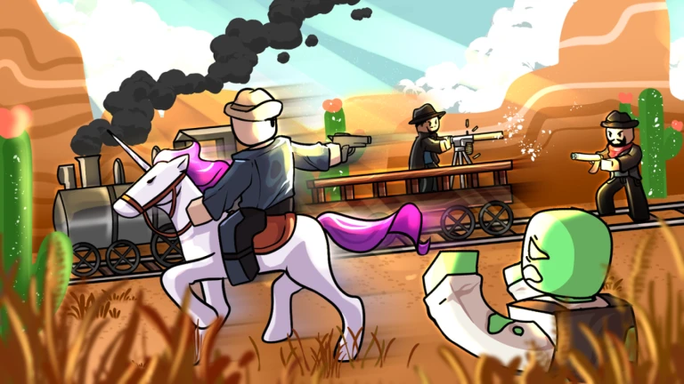
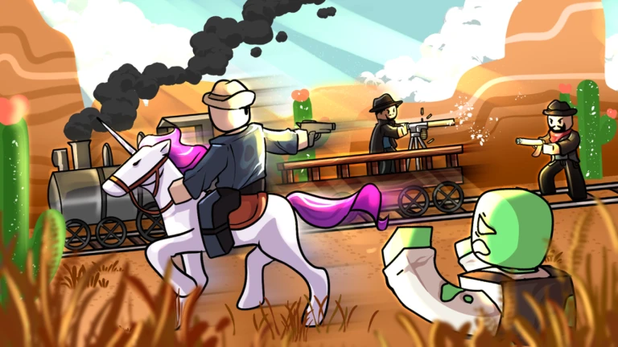

Roblox is an online gaming platformwhere anyone can make
or play games.
It is created by David Baszucki. One of the most populaed game in
Roblox is Grow a Garden
with more than 16.4 Billion visits. It was created on 2004 and became a popular online game.
Another popular game on Roblox is Steal a Brainrot.
With over 11.1 Billion
visits.The game is about Buying a brainrot and it generates money for us.
In this game we can also steal others brainrots. There is also
a rebirth in which
it lets us unlock good items and also give us extra slots.
Another popular game on Roblox is Dead Rails,
a popular horror game about adventure. In this game there will be a
train and we have to ride it
till the end by fighting through the Zombie Apocalypse. It is created by a player called Ricomiller,
and there have been lots of
copies of this game like; Dead Rivers, Army Roads, Deadly Roads, Dead Rails Moddded and many more...
 

Roblox also has a Avatar system in which you can change your skin.
By
changing your skin we can make ourself look better when we play other games!
When you create an account for the first time, your character will be a bacon. Bacon has
a shirt with a bike simpol on it,
a smily face, black pants and pal hair.